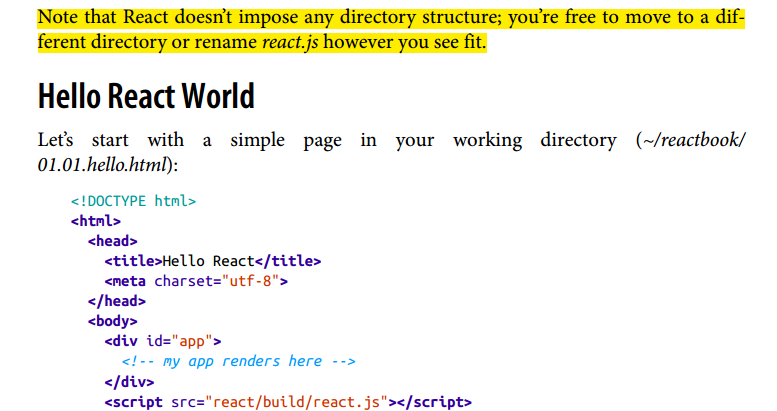

Assalamu Alikum خوش آمدید کہتے ہیں
PAKISTAN
| 1 Present 4 kinds | |||
|---|---|---|---|
| 1 Indefinite | |||
| More kinds of indefinite | Example | Urdu tranlation | Helping verbs |
| Positive | I do./I work./I eat. | میں کرتا ہوں۔ | do, dose |
| Negative | I do not do./I don't do./I do not work./I do not eat.****** React doesn’t impose any directory structure; you’re free to move to a dif‐ ferent directory or rename react.js however you see fit.  | میں نہیں کرتا ہوں۔ | do not, dose not |
| Interrogative | Do I do./Do i work./Do i eat. | کیا میں کرتا ہوں۔ | do , dose |
| 2 Continuse | |||
| More kinds of continuse | Example | Urdu tranlation | Helping verbs |
| Positive | I am doing./I'm doing./I am working./I am eating. | میں کر رہا ہوں۔ | is, am, are |
| Negative | I am not doing./I'm not doing./I am not working./I am not eating. | میں نہیں کر رہا ہوں۔ | is not, am not, are not |
| Interrogative | Am I doing./Am i working./Am i eating. | کیا میں کررہا ہوں۔ | is, am, are |
| 3 perfect | |||
| More kinds of perfect | Example | Urdu tranlation | Helping verbs |
| Positive | I have done./I've done./I have worked./I have eaten. | میں کر چکا ہوں۔ | have, has |
| Negative | I have not done./I've not done./I have not worked./I have not eaten. | میں نہیں کر چکا ہوں۔ | have not, has not |
| Interrogative | Have i done./Have i done./Have i worked./Have i eaten. | کیا میں کر چکا ہوں۔ | have, has |
| 4 perfect continuse | |||
| More kinds of perfect continuse | Example | Urdu tranlation | Helping verbs |
| Positive | I have been doing since mornig./I've been donig since mornig./I have been working since morning./I have been eating since morning. | میں سبح سے کر رہا ہوں۔ | have been, has been |
| Negative | I have been not doing since mornig./I have been not working since morning./I have been not eating since morning. | میں سبح سے نہیں کر رہا ہوں۔ | have been not, has been not |
| Interrogative | Have i been doing since mornig./Have i been working since morning./Have i been eating since morning. | کیا میں سبح سے کر رہا ہوں۔ | have been, has been |
| 2 Past 4 kinds | |||
| More kinds of indefinite | Example | Urdu tranlation | Helping verbs |
| Positive | میں نے کیا۔ | did, or verb second form | |
| Negative | I did not do.,I dide't do. | میں نے نہیں کیا۔ | did, |
| Interrogative | did i do. | کیا میں نے کیا۔ | did, |
| More kinds of continuse | Example | Urdu tranlation | Helping verbs |
| Positive | I was doing. | میں کر رہا تہا۔ | was, were |
| Negative | I was not doing. | میں کر رہا تہا۔ | was, were | Interrogative | Was i doing. | میں کر رہا تہا۔ | was, were | Positive | Interrogative | Negative |
| Positive | I had done. | میں کر چکا تہا۔ | had |
| 4 perfect continuse | I had been doing since mornig. | میں سبح سے کر رہا تہا۔ | had been, |
| 3 Future 4 kinds | |||
| More kinds of indefinite | Example | Urdu tranlation | Helping verbs |
| Positive | I will do. | میں کروں گا۔ | will |
| Negative | I will not do. | میں نہیں کروں گا۔ | wil not |
| Interrogative | Will i do. | کیا میں کروں گا۔ | will |
| continese | |||
| Positive | I will be doing. | میں کر رہا ہوں گا۔ | will be |
| Negative | I will be doing. | میں کر رہا ہوں گا۔ | will be |
| Interrogative | I will be doing. | میں کر رہا ہوں گا۔ | will be | Positive | Interrogative | Negative |
| More kinds of perfect | I will have done. | میں کر چکا ہوں گا۔ | will have,will has |
| More kinds of perfect continuse | I will have been doing since mornig. | میں سبح سے کر رہا ہوں گا۔ | will have been, will has been |